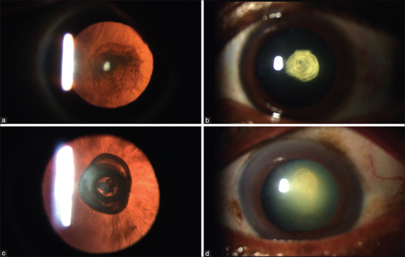
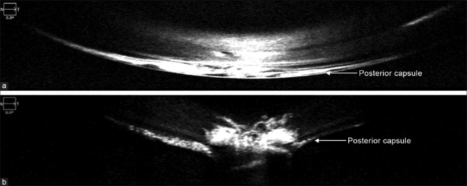
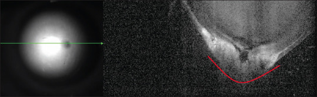
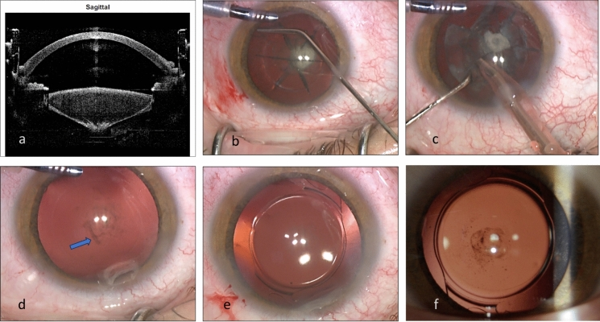
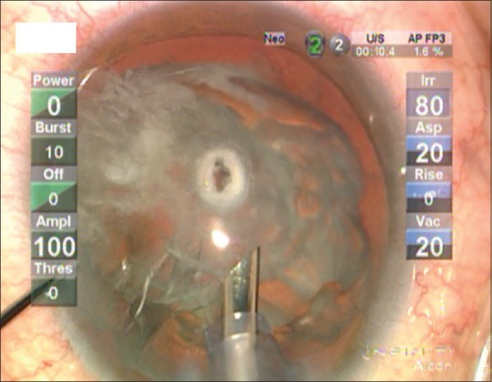

1504 — Đục thể thủy tinh cực sau (posterior polar cataract): dự báo rách bao sau TRƯỚC mổ và chiến lược mổ
Tags: pattern:duc-cuc-sau pattern:vong-dong-tam pattern:ho-bao-sau pattern:pseudohole vung:mat vung:the-thuy-tinh vung:tien-phau protocol:AS-OCT protocol:SS-AS-OCT protocol:25MHz-B-scan protocol:retro-illumination score:Daljit-Singh incidentaloma:khong
Mức chắc chắn (certainty): tổng hợp y văn (literature synthesis) — dựng từ 388 mắt đục thể thủy tinh cực sau (PPC) phân độ theo Daljit Singh, mổ phaco tại một trung tâm Ấn Độ 2016–2019 (Indian J Ophthalmol 2022, PMC9426121, CC BY-NC-SA 4.0); 100 mắt có AS-OCT trước mổ (Indian J Ophthalmol 2023, PMC10391387, CC BY-NC-SA 4.0); 44 mắt AS-OCT đối chiếu tình trạng bao sau trong mổ (Oman J Ophthalmol 2023, PMC10433076, CC BY-NC-SA 4.0); 70 mắt phân nhóm bằng SS-AS-OCT rồi mổ theo nhóm (Indian J Ophthalmol 2025, PMC12707404, CC BY-NC-ND 4.0); 21 mắt chụp 25 MHz B-scan trước mổ (J Ophthalmol 2018, PMC5896256, CC BY 4.0); tổng quan kỹ thuật mổ PPC (Indian J Ophthalmol 2017, PMC5742963, CC BY-NC-SA 3.0); 80 mắt phaco "V/λ nucleofractis + viscodissection" (Indian J Ophthalmol 2020, PMC7210840, CC BY-NC-SA 4.0); 24 mắt hydrodelineation + hydrodissection có OVD (BMC Ophthalmol 2018, PMC6038186, CC BY 4.0); 10 mắt femtosecond + hydrodissection (Int Ophthalmol 2024, PMC11377625, CC BY 4.0); 100 bệnh nhân giải trình tự toàn exome (Indian J Ophthalmol 2026, PMC13422898, CC BY-NC-ND 4.0); 1 ca PPC + posterior lenticonus ở trẻ 5 tuổi (Front Med 2026, PMC13616654, CC BY 4.0). Nhóm không có bệnh nhân của mình; chỗ suy luận ghi [suy luận]. Không ghi tên tác giả — attribution dùng tạp chí + năm + PMCID (đối chiếu authorString Europe PMC ngày 2026-11-18).
Ranh giới với bài đã có: 1498 trả lời "mắt đục không soi được đáy — có phải B-scan?" và đã dạy đọc một ảnh B-scan; 1492 trả lời PCO sau phaco; 6211 trả lời đục trục quang sau mổ đục bẩm sinh; 6213 trả lời đục do chấn thương ở trẻ. Bài này trả lời câu hỏi tiền phẫu hẹp hơn: đục cực sau — bao sau còn nguyên, mỏng hay đã hở? đo bằng gì, ngưỡng nào đổi kế hoạch mổ, và làm gì trong từng bước để không rách bao.
Câu chốt — năm con số phải thuộc: (1) rách bao sau (posterior capsule rupture, PCR) trong PPC không phải một con số: 3,4% (3/89) ở type 1 → 10,4% (14/135) type 2 → 75% (6/8) type 3, PCR chung 9,3% (35/388), rơi nhân/vỏ 1,3% (PMC9426121); (2) AS-OCT thấy hở bao sau 14/100 trước mổ và 12/13 ca PCR đã có hở từ trước — độ nhạy 92,3%, đặc hiệu 97,7%, NPV 98,8% (PMC10391387); (3) nếu SS-AS-OCT thấy bao sau LIÊN TỤC dưới đục cực sau thì hydrodissection nhẹ + xoay nhân cho PCR 1,9% (1/54), còn bao "abrupt" (cụt, không thấy liên tục) thì dù chỉ hydrodelineation + không xoay nhân vẫn 25% (4/16) (PMC12707404); (4) 25 MHz B-scan chỉ thấy 2/21 bao hở và bỏ sót 2/4 PCR — hồi âm cao giữa đục và bao sau (dính) cũng là dấu nguy cơ (PMC5896256); (5) hai yếu tố nguy cơ đo được trên đèn khe: đường kính đục > 4 mm và tuổi < 40 (tổng quan PMC5742963).
1. Tổng quan bệnh học – cơ chế hình ảnh
1.1 Bệnh học: không phải "đục thể thủy tinh ở vị trí lạ" mà là khiếm khuyết bao sau + dính
- PPC là đục khu trú ở cực sau, thường bẩm sinh, với nhiều lớp đồng tâm quanh một mảng trung tâm ("bull's-eye"/dấu bia — target sign). Tổng quan mô tả 2 thể: ổn định (stationary) — mảng trung tâm + vòng đồng tâm, thị lực tốt; và tiến triển (progressive) — các tia đục lan ra vỏ sau ("radiating rider opacities") làm triệu chứng tăng dần (PMC5742963).
- Mấu chốt không nằm ở độ đục mà ở bao sau. Mảng đục dính chắc vào bao sau và bao sau ở đó mỏng hoặc khuyết bẩm sinh; tổng quan chia 3 bệnh cảnh: (1) hở bao sau sắp xảy ra (imminent dehiscence), (2) hở bao sau có sẵn (preexisting dehiscence), (3) thể thủy tinh tự di lệch (spontaneous dislocation). Trong 79 mắt của chính nhóm tổng quan: 77/79 (97%) là "sắp hở", 2/79 (3%) hở thật (PMC5742963) — nghĩa là đa số bao sau còn liên tục nhưng mỏng, và cái mỏng ấy không nhìn thấy bằng mắt.
- Vì sao mổ dễ rách đến thế: mọi thao tác bơm nước vào khoang bao (hydrodissection) hoặc xoay nhân đều tạo áp lực thủy lực đúng vào chỗ bao mỏng nhất và đang dính — bao vỡ từ trong ra trước khi phẫu thuật viên kịp thấy. Tổng quan ghi nhận PCR tới 36% ở các loạt cũ, 26%, rồi 6–7% và 4% ở loạt mới — cải thiện là nhờ kỹ thuật, không nhờ máy (PMC5742963).
- Di truyền và tính hai bên: phần lớn lẻ tẻ (sporadic), nhưng di truyền trội nhiễm sắc thể thường đã được chứng minh trong nhiều gia hệ — PITX3 (đột biến 542delC, liên kết 10q, LOD 3,10) (PMC3103741), CRYBA1/A3 (đột biến điểm cắt nối intron 3, 17p12–21.2) (PMC2817011), CRYGD p.R140X (đục nhân + cực sau) (PMC3894400). Loạt 100 bệnh nhân giải trình tự toàn exome 2026: 58% hai bên, 61% lẻ tẻ, 39% có tiền sử gia đình; biến thể CRYBG3 và GJA3 gặp nhiều hơn ở nhóm PCR, và không tìm thấy biến thể PITX3 — tức dị hợp di truyền, không có "điểm nóng" (PMC13422898). Phản biện nguồn: tổng quan cũ ghi hai bên 90% (và trích một loạt khác 70%) trong khi loạt 2026 chỉ 58% — chênh lệch do cách chọn bệnh (phòng khám chuyên sâu vs sàng lọc), không nên lấy một số làm chuẩn.
1.2 TẠI SAO ảnh trông như vậy — vật lý của ba phương thức
- Đèn khe + soi ngược sáng (retroillumination): ánh sáng phản xạ từ đáy mắt đi xuyên qua thể thủy tinh; chỗ đục tán xạ ánh sáng → hiện khối tối trên nền đỏ cam. Vì đục cực sau được các lớp vỏ sau xếp nếp bao quanh, bờ đục lượn sóng nhiều vòng → dấu bia/vòng đồng tâm. Đây là dấu thị giác rẻ nhất để phân độ, nhưng nó không nói gì về bao sau bên dưới [suy luận từ bản chất kỹ thuật].
- AS-OCT (chụp cắt lớp quang học tiền đoạn): dùng ánh sáng ~1.300 nm, bước sóng dưới 1 µm → phân giải cỡ µm, đủ vẽ một đường bao sau dày 5–20 µm. Vì vậy nó trả lời đúng câu hỏi "đường bao còn liên tục hay đã đứt", và vị trí đứt (dưới mảng đục). Giới hạn: đục dày cản ánh sáng → có ca không thấy bao hoặc giả hở (mục 5).
- Siêu âm 25 MHz (25 MHz B-scan): vận tốc âm trong mô mềm ~1.540 m/s → bước sóng ≈ 62 µm ở 25 MHz (so với ≈ 154 µm ở 10 MHz). Nghĩa là khuyết bao 10–20 µm nằm dưới ngưỡng phân giải; chỉ hở lớn, bờ lật vào dịch kính mới thấy. Đây là lý do vật lý khiến 25 MHz bỏ sót 2/4 PCR trong loạt 21 mắt (PMC5896256) — không phải máy kém, mà là giới hạn bước sóng.
- CT/MRI: không dùng để đánh giá bao sau — CT cho nhãn cầu đồng nhất ~20–40 HU, MRI phân giải mm, không thể thấy màng 10 µm; MRI chỉ có ích khi nghi u/dị vật phối hợp [suy luận].
1.3 Bốn thang số liệu để không nói "nguy cơ cao" chung chung
| Bối cảnh | n | PCR | Nguồn |
|---|---|---|---|
| Phaco PPC, phân độ Daljit Singh | 388 mắt | 9,3% (35/388); type 3 = 75% | PMC9426121 |
| Phaco, nhiều phẫu thuật viên | 80 mắt | 7,5% (6/80); "trên bàn" 2,6% (2/76) | PMC7210840 |
| Hydrodelineation + hydrodissection có OVD | 24 mắt | 16,7% (4/24) | PMC6038186 |
| Phaco vs MSICS | 164 mắt | 10,3% vs 14,0% (p = 0,506) | PMC9907252 |
| AS-OCT trước mổ | 100 mắt | 13% (13/100) | PMC10391387 |
| SS-AS-OCT: bao liên tục + hydrodissection | 54 mắt | 1,9% (1/54) | PMC12707404 |
| SS-AS-OCT: bao abrupt + chỉ hydrodelineation | 16 mắt | 25% (4/16) | PMC12707404 |
| FLACS + hydrodissection nhẹ | 10 mắt | 1/10 (trong lúc rửa vỏ) | PMC11377625 |
- Dịch nghĩa lâm sàng: 7–10% là con số của trung tâm lớn, mổ có quy trình; hở bao có sẵn đẩy lên hàng chục %. Vì vậy câu hỏi không phải "PPC nguy hiểm không" mà "mắt này thuộc nhóm nào".
2. Mẫu hình + chẩn đoán phân biệt theo vị trí (gamut)
Mẫu hình trung tâm: một đám đục tròn, bờ nhiều vòng, nằm đúng cực sau thể thủy tinh, trên mắt còn trong — ba câu hỏi luôn theo thứ tự: (1) đường kính bao nhiêu mm? (2) có dấu hiệu hở bao chưa? (3) đục này là PPC, giả hở (pseudohole), hay đục dưới bao sau thường?
2.1 Phân độ Daljit Singh — thang dùng được ngay trên đèn khe
| Độ | Hình thái | PCR trong loạt 388 mắt | Nguồn |
|---|---|---|---|
| Type 1 | Đục cực sau kèm đục dưới bao | 3,4% (3/89) | PMC9426121 |
| Type 2 | Đám đục tròn/bầu dục rõ bờ, các vòng kiểu "củ hành", có/không chấm xám ở rìa | 10,4% (14/135) | PMC9426121 |
| Type 3 | Đám đục trắng đục rõ bờ + chấm trắng đặc ở rìa (dấu Daljit Singh), thường bao sau mỏng/không có | 75% (6/8) | PMC9426121 |
| Type 4 | Phối hợp các thể trên + đục nhân | 7,7% (12/156) — xem phản biện dưới | PMC9426121 |
Phản biện nguồn (bắt buộc): phần tóm tắt của PMC9426121 ghi type 4 là 17,7%, nhưng bảng 2 của chính bài ghi 12/156 = 7,7% (và 12/156 mới khớp với tổng 35 PCR). Bài này dùng số trong bảng và ghi rõ chỗ lệch — đúng quy tắc "trung thành nguồn + phản biện", không lặng lẽ chọn số đẹp.
2.2 Gamut theo hình thái (cùng một "đốm trắng ở cực sau")
- PPC type 1–4 — như trên; hai bên 58–90% (PMC13422898, PMC5742963) → luôn soi mắt bên kia, vì nó vừa là chẩn đoán, vừa là kiểu hình tham chiếu cho mắt sẽ mổ.
- Hở bao sau có sẵn (preexisting dehiscence) — đục cực sau kèm một vùng bao mất liên tục, đôi khi thấy dịch kính lấp vào ("fish-mouthing" — dấu đã rách, không phải "sắp rách") (PMC5742963).
- Giả hở (pseudohole) — vỏ sau có khuyết tròn như lỗ nhưng bao sau bên dưới còn nguyên; đây là bẫy ngược: thấy "lỗ" mà không được hành động như đã rách, nhưng cũng không được mặc định an toàn (mục 5) (PMC5742963).
- Đục dưới bao sau (posterior subcapsular cataract, PSC) — mảng đục sát bao sau nhưng không có vòng đồng tâm, bờ xốp, lan tỏa, thường do corticoid/đái tháo đường/xạ; bao sau không có khiếm khuyết bẩm sinh → mổ như đục thường, nguy cơ PCR thấp hơn nhiều.
- Mảng xơ bao sau (posterior capsular plaque) — mảng trắng đặc, dính bao sau, thường sau chấn thương/viêm; không phải PPC; để lại và YAG sau 4–6 tuần nếu cần (PMC5742963).
- Posterior lenticonus — cực sau phình ra sau thành hình nón, soi ngược sáng có "giọt dầu" (oil droplet sign); đục thường khu trú trong chỗ phình, hay một bên ở trẻ; ca trẻ 5 tuổi: quang sai bậc cao 1,426 µm, DLI 0,34, mổ lấy IOL → 0,3 → 0,8 thị lực (PMC13616654).
- Di tích màng hyaloid trước/Mittendorf dot — một chấm nhỏ ở cực sau, không vòng đồng tâm, không tiến triển → không phải chỉ định mổ.
- Thể thủy tinh tự di lệch (spontaneous dislocation) — hiếm; PPC có thể trượt vào tiền phòng do đứt dây chằng; bệnh cảnh cấp cứu khác hẳn (PMC5742963).

Hình: (a) type 1 — đục cực sau kèm đục dưới bao; (b) type 2 — các vòng đồng tâm kiểu "củ hành"; (c) type 3 — đám trắng đặc bờ rõ, bao sau mỏng/khuyết; (d) type 4 — phối hợp + đục nhân. Nguồn: Indian J Ophthalmol 2022, PMC9426121, CC BY-NC-SA 4.0 (nguyên bản, giữ nhãn a–d).
3. Bảng so sánh phân biệt (ma trận đối chiếu)
| Thực thể (entity) | Hình ảnh điển hình | Chốt vào (rule-in) | Chốt loại (rule-out) | Gợi ý xác nhận |
|---|---|---|---|---|
| PPC type 3 (nguy cơ cao nhất) | Đám trắng đặc bờ rõ + chấm trắng ở rìa, không thấy đường bao sau dưới đục | Dấu Daljit Singh + đường kính > 4 mm + AS-OCT không vẽ được bao sau | Bao sau liên tục rõ trên SS-AS-OCT dưới đục → hạ nguy cơ (nhóm 1,9%) | AS-OCT/SS-AS-OCT; không hydrodissection; cân nhắc FLACS/femtodelineation |
| PPC type 2 (củ hành) | Vòng đồng tâm nhiều lớp, rìa có chấm xám | Vòng đồng tâm + mảng trung tâm | Không có vòng, bờ xốp lan tỏa → PSC thường | Đèn khe soi ngược sáng + AS-OCT |
| Hở bao sau có sẵn | Khe bao mất liên tục, có thể dịch kính lấp | AS-OCT: đứt đoạn dưới đục; fish-mouthing trong mổ | Đường bao liên tục suốt dưới đục = chưa hở | AS-OCT cắt đúng trục đục; 25 MHz chỉ khi hở lớn |
| Giả hở (pseudohole) | "Lỗ" tròn ở vỏ sau nhưng không có dòng dịch kính, không đổi theo thì | Đáy "lỗ" có vỏ sau phủ; bao sau liên tục trên AS-OCT | Bao mất liên tục + hồi âm dịch kính → hở thật | AS-OCT; trong mổ: không thấy dịch kính chui lên |
| Đục dưới bao sau (PSC) | Plaque xốp sát bao sau, không vòng đồng tâm | Bờ lan tỏa + tiền sử corticoid/ĐTĐ/xạ | Bờ đanh, có vòng → PPC | Soi ngược sáng; LOCS III |
| Mảng xơ bao sau | Mảng trắng đặc, dày dính bao | Dày đặc + tiền sử chấn thương/viêm | Không vòng, không chấm rìa | Để lại, YAG sau 4–6 tuần |
| Posterior lenticonus | Cực sau lồi hình nón; giọt dầu khi soi ngược sáng | Đường bao phình ra sau trên AS-OCT/OCT máy laser | Đường bao cong bình thường | Ca trẻ: quang sai + DLI giúp quyết định mổ (PMC13616654) |
| Mittendorf dot | Chấm nhỏ đúng cực sau, không vòng | Không tiến triển, không mờ dần | Đám đục có vòng + dày lên → PPC | Theo dõi, không mổ |

Hình: (a) bao sau liên tục dưới đục cực sau (mũi tên "Posterior capsule"); (b) bao sau hở — đường bao mất liên tục đúng dưới mảng đục. Nguồn: Indian J Ophthalmol 2023, PMC10391387, CC BY-NC-SA 4.0 (nguyên bản).
4. Protocol chụp + hệ phân độ & chiến lược mổ
4.1 Tiền phẫu — bốn bước, theo thứ tự
- Đèn khe, đồng tử giãn tối đa, soi ngược sáng: ghi hình thái (type 1–4), đường kính đục (mm) — > 4 mm là ngưỡng nguy cơ (PMC5742963), và tìm dấu hở: khe bao, dịch kính lấp, mống mắt rung khi di chuyển mắt.
- AS-OCT / SS-AS-OCT cắt qua đúng trục đục: phân 3 nhóm — bao liên tục, bao "abrupt" (cụt, mất liên tục kiểu bậc), bao hở rõ (PMC12707404). Đây là bước đổi kế hoạch mổ nhiều nhất.
- Siêu âm 25 MHz khi AS-OCT không xuyên qua được (đục dày) hoặc khi cần xác nhận hở lớn: đường bao lồi vào dịch kính = hở; hồi âm cao giữa đục và bao = dính chắc — dấu nguy cơ dù bao còn liền (PMC5896256).
- Sinh trắc quang + soi đáy mắt + soi mắt bên kia; tư vấn bằng số: mắt type 3 nguy cơ ~75%, mắt bao liên tục ~2% (PMC9426121, PMC12707404), và nói rõ phương án nếu rách (IOL sulcus, cắt dịch kính trước, theo dõi võng mạc).
4.2 Luồng quyết định (dùng đúng ba nhóm SS-AS-OCT)
flowchart TD
A[Đục cực sau trên đèn khe] --> B[Đo đường kính đục + AS-OCT cắt qua cực sau]
B --> C{Bao sau trên AS-OCT}
C -->|Liên tục rõ| D[Hydrodissection NHẸ + xoay nhân được phép]
D --> E[PCR 1,9% trong 54 mắt]
C -->|Abrupt hoặc không thấy| F[KHÔNG hydrodissection; chỉ hydrodelineation, KHÔNG xoay nhân]
F --> G[PCR 25% trong 16 mắt]
C -->|Hở rõ| H[Không bơm vào khoang bao; cân nhắc FLACS hoặc đường pars plana; tư vấn trước]
G --> I{IOL}
H --> I
E --> I
I -->|Bao còn nguyên| J[IOL trong bao]
I -->|Đã rách| K[IOL sulcus + optic capture; cắt dịch kính trước nếu có dịch kính]
4.3 Sáu luật trong phòng mổ
- Mở bao trước (capsulorhexis) ~5 mm: nhỏ quá thì khó đẩy nhân ra, to quá thì mất chỗ đỡ IOL nếu phải đặt sulcus (PMC5742963).
- Không hydrodissection cổ điển (bơm tách vỏ toàn chu vi) — đây là thao tác gây vỡ thủy lực kinh điển; thay bằng hydrodelineation tạo "đệm" epinucleus (PMC5742963, PMC7210840).
- Kỹ thuật "inside-out delineation": rãnh trung tâm → cannula góc phải bơm từ trong ra, tạo vòng vàng (golden ring) xác nhận đã tách lõi; epinucleus còn lại làm đệm che bao sau cho tới khi hút hết nhân (PMC5742963).
- Không xoay nhân, không "rock" thể thủy tinh, áp lực chai thấp, vacuum thấp, buồng kín; không đánh bóng bao sau dù bao còn nguyên (PMC5742963).
- Lấy epinucleus bằng viscodissection (bơm OVD tách epinucleus khỏi bao), rồi hút; loạt 24 mắt vẫn 16,7% PCR, trong đó 2 ca rách khi lấy epinucleus và 2 ca khi rút OVD sau khi đã đặt IOL trong bao → giai đoạn cuối nguy hiểm không kém giai đoạn đầu (PMC6038186).
- Femtosecond (femtodelineation): chia nhân thành 3 trụ đồng tâm, trụ ngoài Ø 5,5 mm, mỗi lớp lấy đi trong khi lớp ngoài còn làm đệm (PMC5742963); loạt 10 mắt FLACS + hydrodissection nhẹ: 1 rách khi rửa vỏ, không rơi nhân (PMC11377625). FLACS không thay thế được đánh giá bao sau.
4.4 Phân độ nguy cơ để tư vấn (thang thực dụng)
| Nhóm | Tiêu chí | PCR kỳ vọng | Thái độ |
|---|---|---|---|
| Thấp | Bao sau liên tục trên SS-AS-OCT, đục ≤ 4 mm | ~2% | Phaco thường, hydrodissection nhẹ được phép |
| Trung bình | Bao abrupt/không thấy, đục > 4 mm, tuổi < 40 | ~10% | Không hydrodissection; hydrodelineation; không xoay nhân |
| Cao | Hở bao rõ hoặc fish-mouthing trước mổ, type 3 | 25–75% | Tư vấn trước; cân nhắc FLACS/pars plana; chuẩn bị IOL sulcus |

Hình: bên trái là ảnh định hướng với đường cắt; bên phải AS-OCT — vùng bao sau mất liên tục (viền đỏ) ở bệnh nhân rơi nhân trong mổ. Nguồn: Oman J Ophthalmol 2023, PMC10433076, CC BY-NC-SA 4.0 (nguyên bản).

Hình: (a) OCT trục dọc của máy laser — cực sau phình/lồi ra sau tại chỗ đục, buộc phải hạ mặt phẳng cắt khi femtodelineation; (b–f) các thì hydrodissection nhẹ và lấy nhân. Nguồn: Int Ophthalmol 2024, PMC11377625, CC BY 4.0 (nguyên bản).
5. Biến thể bình thường và cạm bẫy
- Giả hở (pseudohole) — khuyết tròn ở vỏ sau, bao sau còn nguyên; nếu đọc thành "đã rách" thì mổ quá tay (đặt sulcus oan, bỏ hydrodelineation), còn nếu đọc thành "lành" mà bỏ AS-OCT thì bỏ sót hở thật ở ca khác. Chốt bằng AS-OCT và quan sát trong mổ: hở thật có dịch kính chui lên (PMC5742963).
- "Fish-mouthing" = đã rách, không phải sắp rách. Thấy dịch kính qua mảng đục thì dừng ngay thao tác bơm/xoay, bơm OVD giữ buồng, chuyển kế hoạch (PMC5742963).
- Satisfaction of search: type 4 có đục nhân dày che mất đục cực sau → đọc "đục nhân già" rồi mổ như thường. Phòng tránh: soi mắt bên kia và chụp ảnh tiền phẫu trước khi đồng tử co (hai bên 58–90%).
- AS-OCT âm tính giả: đục quá dày cản ánh sáng → không thấy bao; trong loạt 44 mắt, 2 mắt AS-OCT báo hở nhưng bao nguyên trong mổ, và 1 mắt AS-OCT báo liền nhưng rách thật (bao cực mỏng/dính) (PMC10433076). Vì vậy "liền" trên AS-OCT không phải giấy miễn trách.
- 25 MHz âm tính giả: bỏ sót 2/4 PCR; hồi âm cao giữa đục và bao lại là dấu dính — đọc đúng thì tăng chứ không giảm cảnh giác (PMC5896256).
- Nhầm PSC với PPC: PSC không có vòng đồng tâm, không có khiếm khuyết bao bẩm sinh → nếu gọi PSC là PPC thì mổ quá thận trọng (bỏ hydrodissection, mổ chậm) nhưng nếu gọi PPC là PSC thì hydrodissection đầy đủ → vỡ bao.
- Trẻ một bên: PPC một bên thường kèm nhược thị → tiên lượng thị lực dè dặt dù mổ kỹ thuật tốt; ca lenticonus 5 tuổi cho thấy quang sai/DLI giúp quyết định thời điểm (PMC13616654).
- YAG quá sớm: màng xơ bao sau để lại nên YAG sau ≥ 4–6 tuần (hàng rào máu–thủy dịch ổn định), không bắn trong vài tuần đầu (PMC5742963).

Hình: trong mổ — khuyết tròn ở vỏ sau giống một lỗ, nhưng bao sau bên dưới còn nguyên (pseudohole). Nguồn: Indian J Ophthalmol 2017, PMC5742963, CC BY-NC-SA 3.0 (nguyên bản, giữ nguyên ảnh chụp kèm thông số máy).
6. Tự lượng giá — Blind Quiz
Ca 1 — Bốn mắt đục cực sau, cùng một buổi khám. Nhìn hình trước, đừng đọc chú thích.
- Gợi ý lâm sàng: người lớn, thị lực giảm dần, đồng tử giãn tốt; cả bốn mắt đều "đục ở giữa".
- Câu hỏi: Phân độ theo Daljit Singh? Mắt nào nguy cơ rách bao sau cao nhất và vì sao? Hai yếu tố nào đo được làm tăng nguy cơ?
Bấm để hiện đáp án (findings + chẩn đoán)
- Findings: (a) đục cực sau kèm đục dưới bao = type 1; (b) vòng đồng tâm kiểu củ hành = type 2; (c) đám trắng đặc bờ rõ + chấm trắng ở rìa = type 3; (d) phối hợp + đục nhân = type 4.
- Nguy cơ cao nhất: (c) type 3 — 75% (6/8) rách bao sau trong loạt 388 mắt, vì bao sau mỏng/khuyết ngay dưới mảng đặc.
- Hai yếu tố đo được: đường kính đục > 4 mm và tuổi < 40 (tổng quan PMC5742963).
- Nguồn ảnh: Indian J Ophthalmol 2022, PMC9426121, CC BY-NC-SA 4.0.
Ca 2 — Hai mắt đục cực sau, chụp AS-OCT trước mổ. Mắt nào phải đổi kế hoạch?
- Gợi ý lâm sàng: cùng một bác sĩ, cùng một máy; câu hỏi duy nhất là bao sau.
- Câu hỏi: Mô tả đường bao sau ở (a) và (b)? Nếu chỉ có một mắt được hydrodissection, chọn mắt nào? Độ nhạy/đặc hiệu của AS-OCT cho hở bao sau là bao nhiêu?
Bấm để hiện đáp án
- Findings: (a) bao sau liên tục — đường hồi âm mảnh chạy liên tục dưới mảng đục (mũi tên); (b) bao sau hở — đường bao mất liên tục, mép cụt đúng dưới đục.
- Đổi kế hoạch: (b) — không hydrodissection, chỉ hydrodelineation, không xoay nhân; nếu hở rõ: cân nhắc FLACS/pars plana, tư vấn trước.
- Hiệu năng AS-OCT: độ nhạy 92,3%, đặc hiệu 97,7%, PPV 85,7%, NPV 98,8% (100 mắt; 12/13 ca PCR đã có hở từ trước) — PMC10391387.
- Lưu ý phản biện: bài PMC10433076 (44 mắt) ghi nhãn độ nhạy/đặc hiệu ngược nhau trong tóm tắt; đếm lại từ số ca cho nhạy 87,5% (7/8), đặc hiệu 94,4% (34/36), PPV 77,8%, NPV 97,1%. Khi trích, dùng số đếm được, không chép nhãn.
- Nguồn ảnh: Indian J Ophthalmol 2023, PMC10391387, CC BY-NC-SA 4.0.
Ca 3 — Trong mổ, sau khi bóc vỏ, thấy "một lỗ" ở cực sau. Xử trí?
- Gợi ý lâm sàng: đục cực sau, đang ở thì lấy vỏ; không thấy dịch kính trào lên, tiền phòng vẫn giữ.
- Câu hỏi: Đây là hở bao thật hay giả hở? Dấu hiệu nào phân biệt ngay trong mổ? Bước tiếp theo?
Bấm để hiện đáp án
- Findings: khuyết tròn ở VỎ sau với bao sau còn phủ bên dưới = pseudohole; không có dịch kính chui qua.
- Chốt trong mổ: hở thật có "fish-mouthing" — dịch kính nhìn thấy qua mảng đục; giả hở thì không. Nếu còn nghi: AS-OCT trước mổ hoặc thử bơm OVD nhẹ xem có rò dịch kính (không bơm mạnh).
- Bước tiếp: tiếp tục viscodissection lấy epinucleus, không đánh bóng bao sau, đặt IOL trong bao, hẹn YAG sau ≥ 4–6 tuần nếu mảng xơ còn.
- Nguồn ảnh: Indian J Ophthalmol 2017, PMC5742963, CC BY-NC-SA 3.0.
Bài liên quan chéo
- 400 – Tổng quan Mắt & thị giác
- 1498 – B-scan trước phẫu thuật đục thể thủy tinh (đọc B-scan; 25 MHz; bao sau)
- 1492 – Đục bao sau nhân tạo (PCO) sau phaco ở mắt đã cắt dịch kính (YAG sau mổ)
- 1480 – Đục thể thủy tinh sau bóc màng ERM (mổ phối hợp, tính công suất IOL)
- 6211 – Đục trục quang sau mổ đục thể thủy tinh bẩm sinh
- 6213 – Đục thể thủy tinh do chấn thương ở trẻ
- 1425 – Viêm nội nhãn sau tiêm nội nhãn (biến chứng nhiễm sau thủ thuật nội nhãn)
Không dùng để chẩn đoán độc lập khi chưa có người hướng dẫn.